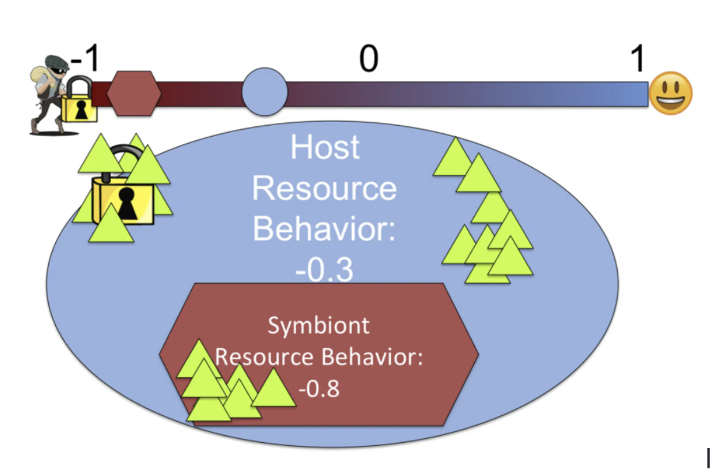

Symbulation is a research platform for simulating the evolution of symbionts and hosts. In Symbulation, a population of host
organisms co-evolves with a population of symbiont
organisms. The symbionts are, by default, endosymbionts, meaning they live and reproduce inside of a host. The hosts are able to collect resources and invest those resources either into defense against their symbionts or donation to their symbionts. Symbionts are then able to steal resources from their host or donate resources back to their host. A synergy factor is applied to the resources donated back to the host, which is user-configured, and is an abstract representation of the many ways that symbionts can help their hosts. The frequency of the organism's reproduction is dependent on how quickly they can collect resources.
In Symbulation, host and symbiont genomes each consist of a single number, the interaction value. The interaction value can be inclusively between −1 (antagonistic) and 1 (cooperative) and determines how the organism acts toward its partner, if it has one. At every update (time step), each host receives a set amount of resources, which are then possibly distributed to its symbiont, based on the host's interaction value. Similarly, if the symbiont receives any resources from their host, its interaction value determines if it will return any resources. An interaction value below 0 means the organism is antagonistic toward its partner. A host with a negative interaction value will invest a correlated proportion of the new resources available into defense. A symbiont with a negative interaction value attempts to steal resources from the host. It attacks the host with magnitude depending on its interaction value. The extent to which the symbiont's value is more negative than the host's value determines the proportion of resources the symbiont is able to steal from the host. For example, if the host has a value of −0.3 and the symbiont a value of −0.8, the host first invests 30% of its resources in defense, meaning that those resources are no longer available for host or symbiont reproduction. Here 20 resources came into the host cell, 6 have now been used up, and 14 remain. The symbiont then attacks with −0.8, and because that value is negative and of greater magnitude than the host's interaction value, the symbiont is able to overcome the host defense. The symbiont is therefore able to steal 7 (50%) of the remaining resources and apply them to its own reproductive progress. The host then also has 7 remaining resources that it is able to use for its own reproduction.
When an organism has collected an amount of resources past a certain threshold, the organism is allowed to reproduce. Hosts must accrue 1000 resources to reproduce, horizontally transmitted symbionts require 100 resources to reproduce, and vertically transmitted symbionts can reproduce without cost (Such symbionts' reproduction is tied to their host's reproduction. See the biology background for more information.). Offspring will have their progenitor's interaction value mutated by a user specified rate and size. The offspring will be placed into another location in the world, either near their progenitor or in a random location depending on a changeable advanced setting.
This type of modeling allows you to observe the evolution by natural selection of genetic traits when populations of organisms interact with one another. The evolution of these complex co-dynamics would be otherwise unobservable in a traditional biology lab setting due to temporal and physical constraints.
